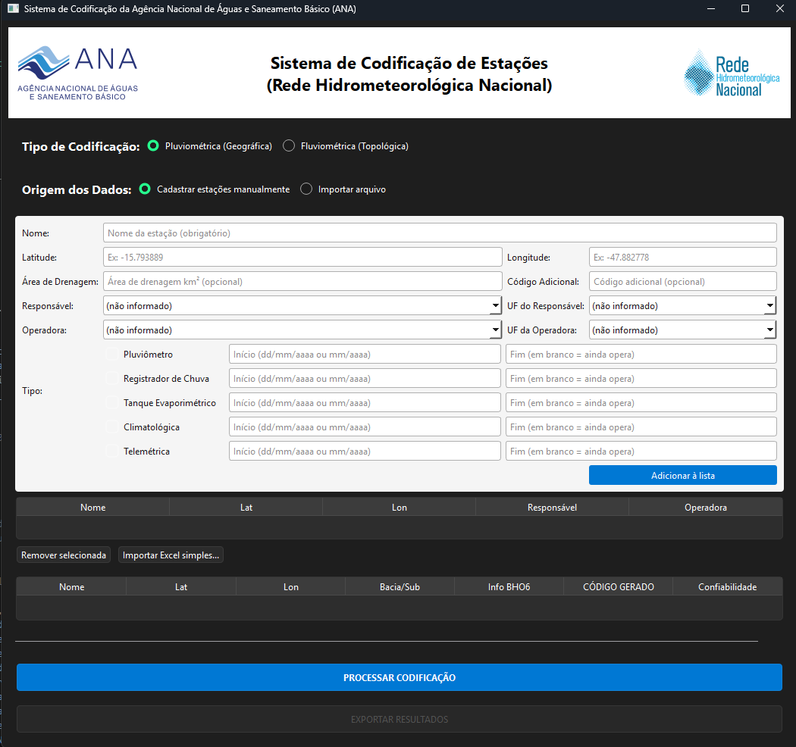

Geração de códigos de estações pluviométricas e fluviométricas
seguindo o padrão geográfico e topológico da ANA
Este manual explica como instalar e usar o Sistema de Codificação Hidrológica, aplicativo desktop que gera códigos de identificação para novas estações da Rede Hidrometeorológica Nacional, seguindo os dois padrões usados pela ANA:
HIDRO (SQL Server) para consultar e gerar códigos únicos. Sem conexão com a
rede da ANA (ou VPN), o aplicativo abre normalmente, mas não consegue processar
nenhuma codificação.
.zip mais recente (ex.: Codificacao_Hidrologica_vX.X.zip).C:\Codificacao_Hidrologica.insumo)
Por causa do tamanho (alguns gigabytes), a pasta insumo — que contém a malha de
sub-bacias, a Base Hidrográfica Ottocodificada (BHO) e a malha de municípios — não vem dentro
do .zip. Ela precisa ser obtida separadamente com a equipe responsável pelo
sistema e colocada dentro da mesma pasta do executável.
.env.example (que vem no .zip) e renomeie a cópia para .env..env num editor de texto simples (Bloco de Notas) e preencha:| Campo | O que é |
|---|---|
DB_HOST | Endereço do servidor SQL Server |
DB_NAME | Nome do banco (normalmente HIDRO) |
DB_USER | Usuário de acesso ao banco |
DB_PASSWORD | Senha correspondente |
Peça essas credenciais para a equipe responsável pelo sistema, caso ainda não tenha.
Depois de tudo pronto, a pasta deve ficar assim:
Codificacao_Hidrologica\
├── Codificacao_Hidrologica.exe
├── .env (suas credenciais do banco)
├── assets\ (ícones e logos, já vem no zip)
└── insumo\ (baixado à parte, veja item 2.2)
Dê dois cliques em Codificacao_Hidrologica.exe para abrir o programa.

A tela principal do sistema é dividida nas seguintes áreas, de cima para baixo:
Baseada em quadrantes de Latitude/Longitude. O código segue o formato clássico
0LLLOOONNN (0 fixo + Latitude + Longitude + sequencial). Essa lógica está
consolidada: o sistema consulta o banco de dados e gera o próximo código disponível
automaticamente, com alta confiança.
O sistema usa a Base Hidrográfica Ottocodificada (BHO) e agrupa as estações de referência já
existentes pelo RioCodigo oficial (não apenas pelo trecho geométrico da malha
moderna), interpolando o código da estação nova entre a referência mais próxima a montante e a
mais próxima a jusante.
Os níveis de confiança que você pode encontrar na coluna "Confiabilidade" são:
| Nível | O que significa |
|---|---|
| Interpolado (RioCodigo confirmado) | Há estações oficiais conhecidas tanto a montante quanto a jusante, no mesmo rio confirmado. Maior confiança. |
| Interpolado (RioCodigo herdado do vizinho) | O rio da estação nova foi inferido pela estação oficial mais próxima geograficamente, não por uma correspondência exata no trecho. |
| Extrapolado (só montante / só jusante) | Só havia referência de um dos lados — o código foi estimado a partir dela. |
| Fallback (sub-bacia) | Não havia nenhuma referência próxima. O código foi estimado com base apenas na sub-bacia. Requer atenção redobrada. |
Existem três formas de informar os dados de uma estação nova ao sistema:
Preencha o formulário na própria tela. Campos disponíveis:
| Campo | Obrigatório? | Observações |
|---|---|---|
| Nome | Sim | Nome da estação |
| Latitude / Longitude | Sim | Graus decimais, ex.: -15.793889. Se a coordenada parecer fora do Brasil, o sistema avisa antes de aceitar. |
| Área de Drenagem | Não | Em km² |
| Código Adicional | Não | Referência externa, se houver |
| Responsável / Operadora | Não | Escolha na lista de entidades da ANA |
| UF do Responsável / da Operadora | Não | Estado (ou país, para bacias transfronteiriças) de cada entidade |
| Tipo (Pluviômetro, Escala, Telemétrica, etc.) | Ao menos 1 | Marque os parâmetros medidos pela estação. A lista muda conforme o tipo de codificação escolhido; Telemétrica aparece sempre. |
| Início / Fim de cada parâmetro marcado | Não | Data de início e fim de operação daquele parâmetro específico (dd/mm/aaaa ou mm/aaaa). Deixe o Fim em branco se o parâmetro ainda está em operação — o sistema calcula automaticamente se a estação está ativa com base nisso. |
Depois de preencher, clique em "Adicionar à lista". A estação aparece na tabela de pendentes logo abaixo, e o formulário é limpo para a próxima. Repita para cada estação nova. Para remover uma estação da lista, selecione a linha e clique em "Remover selecionada".
Se você já tem os dados numa planilha, clique em "Importar Excel simples...". A
planilha precisa ter, no mínimo, as colunas Nome, Latitude e Longitude
(o sistema aceita variações de cabeçalho, como "Lat"/"Lon"). Colunas opcionais reconhecidas:
AreaDrenagem, ResponsavelCodigo, OperadoraCodigo,
CodigoAdicional.
Depois da importação, o sistema mostra um resumo: quantas estações entraram, quais linhas foram ignoradas (e por quê) e quais entraram com algum aviso — por exemplo, coordenada fora do Brasil ou código de responsável não reconhecido. As estações importadas vão para a mesma lista de pendentes do cadastro manual, e podem ser revisadas ou removidas do mesmo jeito.
.mdb existente (modo avançado)
Para quem já mantém os dados numa base Access, selecione "Importar arquivo .mdb existente" e
escolha o arquivo. Ele precisa conter uma tabela chamada Estacoes_Novas com as
estações a codificar (linhas com o campo Codigo em branco).
.env estão corretas.insumo está
no mesmo diretório do executável e contém todos os arquivos esperados..mdb
selecionado não é o esperado; use o modo de cadastro manual como alternativa.A tabela de resultados mostra, para cada estação: Nome, Latitude, Longitude, Bacia/Sub-bacia, informações da malha BHO6 (fluviométrica), o Código gerado e a Confiabilidade.
Clique em "EXPORTAR RESULTADOS" e escolha o formato:
Confira sua conexão com a rede/VPN da ANA. A primeira etapa do processamento conecta no banco
de dados e carrega os arquivos da pasta insumo, que pode levar alguns segundos —
isso é esperado, não é travamento.
Porque a codificação pluviométrica segue uma regra geográfica exata (quadrante de Lat/Lon), enquanto a fluviométrica historicamente depende de decisões tomadas por hidrólogos ao longo de décadas. O sistema faz o melhor possível com os dados disponíveis, mas sempre vale a revisão de quem conhece o rio.
Sim, esses campos são opcionais. Deixe como "(não informado)" se não souber.
Significa que aquele parâmetro (ex.: Escala, Sedimentos) ainda está em operação — é a mesma convenção usada nos inventários oficiais da ANA. Se pelo menos um parâmetro marcado estiver sem Fim, a estação como um todo é considerada em operação.
Em caso de dúvidas, problemas técnicos ou sugestões de melhoria, entre em contato com a equipe responsável pelo sistema ou abra uma issue no repositório do projeto no GitHub.
Desenvolvido por Matheus da Silva Castro — Licença MIT